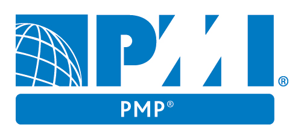

Maritza Alexandra Vaca Garnica
Ingenierio Informático 
Proyectos
- Migración SAP S4/Hana - Fiori - Promesa
- Migración SAP HANA - Promesa
- Implementación Data Center alterno - Contraloría General del Estado
- Implementación de equipos Cisco para Data Center - Escuela Superior Politecnica del Chimborazo
- Implementación de equipos para despliegue de software - Fiscalia General del Estado
- Diversos proyectos en la Banca Electrónica Personas y Empresas del Banco Pichincha - TATA CS
- Migración del core bancario del Banco Pichincha - TATA CS
Habilidades
Presentación
Soy Ingeniera Informática comencé programando aplicaciones en java, desarrollando productos para el cliente con equipos multidisciplinarios, en donde desarrollé habilidades de liderazgo, trabajo en equipo, comunicación. Estas nuevas habilidades me permitieron liderar equipos de desarrollo, que a su vez llegó con los retos de estimar tiempos, planificar tareas, negociar con los interesados, entre otros.
Ahora me desempeño como Líder de Proyectos, certificada PMP e incursionando en el mundo ágil. He liderado proyectos de TI tanto de Software como de Hardware, en clientes del sector privado como para el sector público. Muchos retos se me han presentado en esta ardua tarea, pero creo firmemente que es un rol donde se puede colaborar activamente para conseguir las metas del proyecto alineadas con los objetivos de la empresa.
Me gusta el trabajo en equipo y poder ser parte de él, soy de las personas que busca soluciones y de aquellas que velan y trabaja por la motivación del equipo, porque estoy segura que así se hace la diferencia en los proyectos.
Soy mujer, esposa y ahora madre, amo mi vida, soy feliz. Contribuyo con un granito de arena en la mejora de la sociedad y soy capaz de alcanzar los objetivos planteados en la organización.
Experiencia 5
Adexus
Septiembre 2014 - Agosto 2016
Líder de proyectos
Liderando proyectos de infraestructura y software para clientes de empresa privada y pública, aplicando lo necesario para un proyecto exitoso (liderazgo, coaching, manejo de conflictos, gestión de los interesados, gestión de tiempo, costo, alcance
Tata Consultancy Services
Enero 2011 - Septiembre 2014
Líder de proyectos
Liderando proyectos de Software con metodología propia de TCS, proyectos realizados para Banco Pichincha, manejo de equipos (arquitectura, testers, seguridad, infraestructura)
Tata Consultancy Services
Enero 2011 - Septiembre 2014
Líder Técnica
Análisis, diseño y construcción de aplicaciones Java, estimaciones para tiempo de desarrollo de las aplicaciones con métodos de productividad y puntos de función.
Manejo de equipos de desarrollo.
Tata Consultancy Services
Enero 2011 - Septiembre 2014
Líder Técnica
Desarrollo de aplicaciones Java para proyectos del Banco Pichincha.
Deloitte
Octubre 2010 - Enero 2011
Enterprise Risk Services
Auditoría de Sistemas